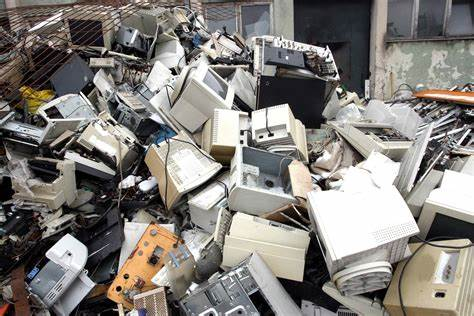

O termo "lixo eletrônico" refere-se a resíduos eletrônicos ou resíduos de equipamentos elétricos e eletrônicos (REEE). Também é conhecido como "e-lixo". Esses são produtos eletrônicos descartados, obsoletos, que não estão mais em uso ou quebrados. Isso inclui uma ampla variedade de dispositivos eletrônicos, como computadores, laptops, telefones celulares, televisores, eletrodomésticos, câmeras, e outros equipamentos eletrônicos. Os efeitos do descarte inadequado de dispositivos eletrônicos têm repercussões significativas em diversas esferas, incluindo o meio ambiente, a saúde pública, a desigualdade social e a economia.
O lixo eletrônico é uma preocupação significativa devido à sua composição complexa e aos materiais tóxicos que podem estar presentes, como metais pesados, plásticos e produtos químicos. Quando não é gerenciado de maneira adequada, o descarte inadequado de lixo eletrônico pode causar danos ao meio ambiente e à saúde humana. Muitas vezes, os eletrônicos contêm substâncias perigosas, como mercúrio, chumbo, cádmio e bromo, que podem se infiltrar no solo e na água se não forem descartados corretamente.
O aumento constante na produção de dispositivos eletrônicos, impulsionado pelo rápido avanço tecnológico e pela obsolescência programada, contribui significativamente para o problema do lixo eletrônico em escala global. Os consumidores frequentemente trocam seus dispositivos por versões mais recentes, resultando em uma quantidade significativa de equipamentos eletrônicos descartados. Para lidar com o problema do lixo eletrônico, muitos países e organizações incentivam a reciclagem e o descarte responsável desses produtos. A reciclagem de eletrônicos envolve a extração segura e a reutilização de materiais valiosos, além da gestão apropriada dos resíduos perigosos. A conscientização sobre o impacto ambiental do lixo eletrônico tem aumentado, incentivando práticas mais sustentáveis em relação ao descarte desses produtos.
Quer saber mais? Continue no nosso site se informando sobre: